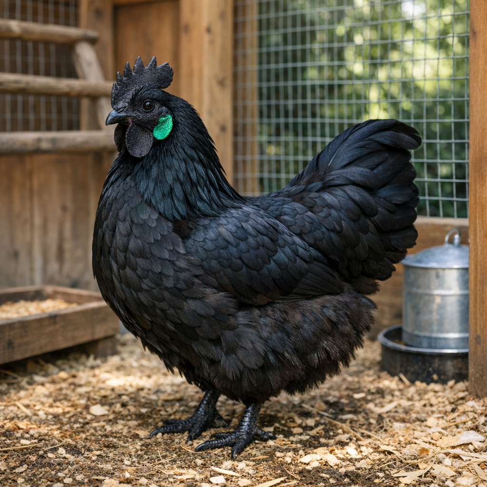

Ухейилюй
О породе

Ухейилюй (кит. «пять чёрных и один зелёный») — старинная китайская порода с чёрным оперением, чёрной кожей и костью, зелёными мочками ушей. Несёт яйца оливкового и бирюзового оттенка. Порода редкая, в России и Европе разводится энтузиастами и частными питомниками; промышленного значения не имеет. Ценится за необычный вид и цвет яиц.
Птицы некрупные, спокойные. Оперение чёрное с зеленоватым отливом. Мочки ушей изумрудно-зелёные — отличительный признак породы. Мясо тёмное (из-за меланизма), в Китае считается деликатесом; для нас важнее яйца уникального оттенка.
Яйценоскость
Около 160–180 яиц в год. Нестись начинают в 6–7 месяцев. Яйцекладка умеренная, сильно зависит от условий и кормления. Для сохранения породы и стабильной отдачи нужен покой, отсутствие стресса и полноценный рацион.
Условия содержания
Ухейилюй теплолюбивы, плохо переносят сырость и морозы. Нужен тёплый, сухой птичник и защищённый выгул. Порода не агрессивна, уживается с другими курами при достаточном пространстве. Кормление — качественный комбикорм, зерно, зелень, добавки для пигментации скорлупы. Важны кальций и витамины.
Характеристики яйца
Цвет скорлупы: оливковый, бирюзовый, серо-зелёный — результат наложения голубого пигмента (биливердин) и коричневого (протопорфирин). Оттенок может немного варьировать. Масса яйца: 45–55 г. Форма: овальная. Вкус и питательность полноценные. Яйца ухейилюй — желанный компонент коллекций «Лазурит», «Северное сияние», «Павлин» и других.
В наших наборах
Яйца ухейилюй входят в коллекции «Лазурит», «Перламутр и Золото», «Северное сияние», «Павлин», «Османский» и др. Подбор по количеству и сочетанию — в калькуляторе.